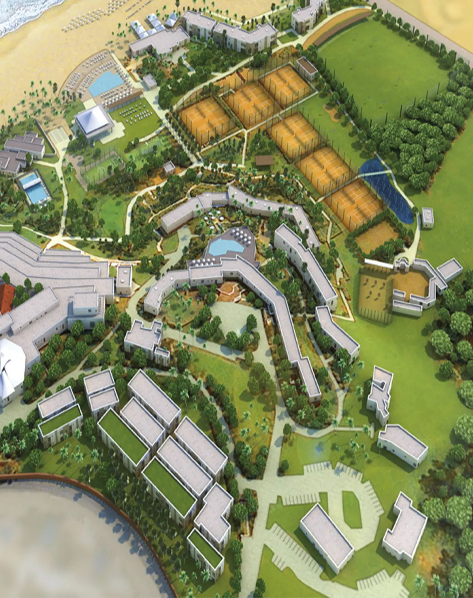
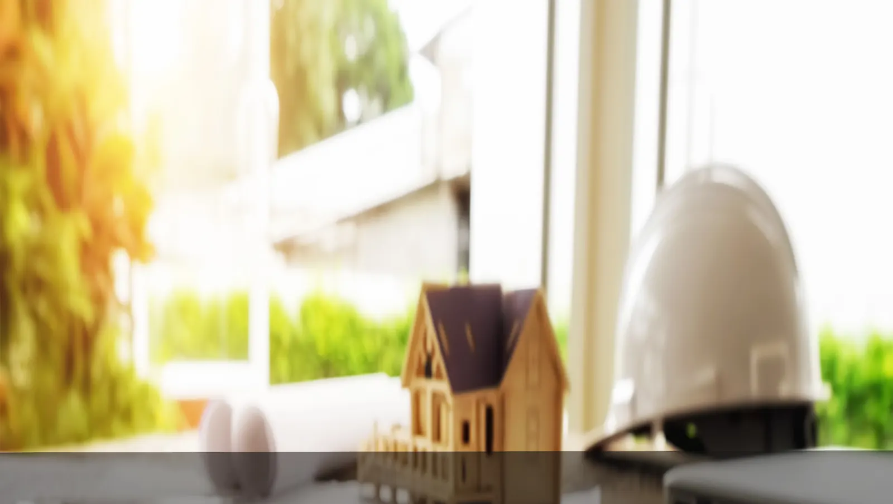
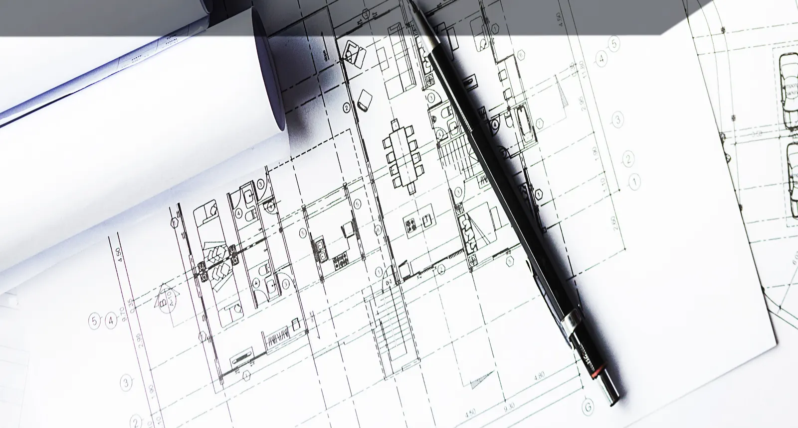
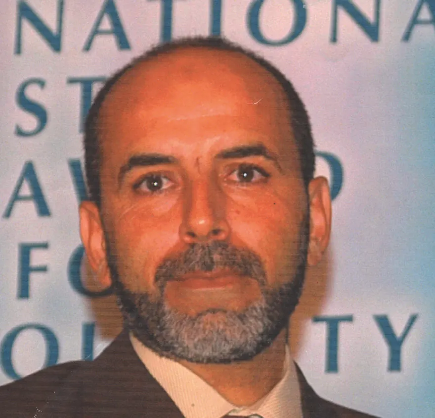
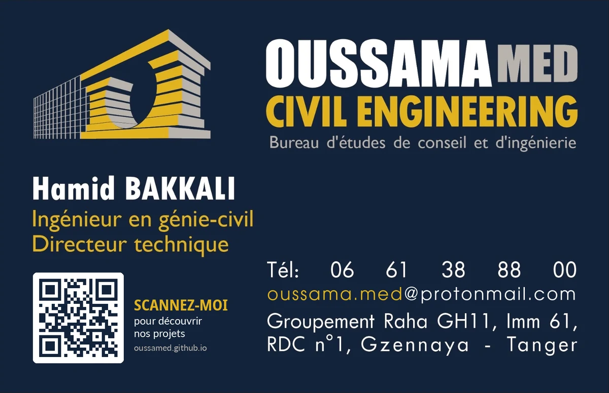

Structures
Études de structures en béton armé, charpentes métalliques et charpentes bois.
Bureau d'études de conseil et d'ingénierie · Tanger
Études de structures, lots techniques et suivi de chantier pour vos projets de construction et de génie civil. Plus de 35 ans d'expérience sur des complexes touristiques, des programmes de logements et des équipements publics partout au Maroc.
Royal Mirage Agadir (ex-Sheraton) · Réaménagement
OUSSAMA MED Civil Engineering accompagne maîtres d'ouvrage, architectes et entreprises dans toutes les missions d'études techniques, de conception et de dimensionnement qui mènent à la réalisation de projets de construction et de génie civil.
Le bureau dispose d'un ensemble performant de logiciels de calcul, achetés ou développés par ses ingénieurs. Ils répondent aux vrais besoins de nos clients, aussi bien sur la conception que sur l'économie du projet, dans le respect des normes en vigueur et de la déontologie de la profession.
Calculs conformes au BAEL 91 et au RPS 2000 (version 2011), notes de calcul détaillées.
Prédimensionnement et optimisation des aciers pour un projet économique.
Suivi rigoureux du façonnage et de la pose du ferraillage, jusqu'à la réception.

Une équipe d'ingénieurs pour l'ensemble des lots techniques d'un projet de bâtiment ou d'infrastructure.
Études de structures en béton armé, charpentes métalliques et charpentes bois.
Études d'ouvrages d'art, de réservoirs et d'ouvrages hydrauliques.
Métrés de gros œuvre et de béton armé avec notre logiciel OUSSAMA Métrés, vérification des quantités et des nomenclatures.
Études de courant fort et de courant faible.
Ventilation mécanique contrôlée, climatisation et désenfumage.
Plomberie sanitaire, réseaux d'assainissement et d'eaux pluviales.
Ordonnancement, pilotage et coordination des intervenants.
Suivi rigoureux des travaux, du façonnage et de la pose du ferraillage.
Hôtels, resorts et programmes résidentiels : une sélection de projets étudiés et suivis par notre équipe. Cliquez sur un projet pour voir le détail des missions.
Opérateurs publics, promoteurs, ministères et architectes : une sélection des projets étudiés et suivis à travers le Royaume.

34 attestations délivrées à Oussama Ingé-Sud Méditerranée pour des missions menées de 1991 à 2021 : Groupe Al Omrane, ERAC-Sud, ONEE, deux ministères et une dizaine de cabinets d'architectes. Al Omrane Agadir classe le bureau en « Panel A, à maintenir » dans toutes ses évaluations. Les attestations sont disponibles sur demande.

Développés en interne pour répondre aux besoins que les logiciels du marché ne couvrent pas. Ils complètent CYPECAD et produisent des documents directement exploitables sur chantier.
Développé au sein d'OUSSAMA MED Civil Engineering avec WINDEV, pour établir de façon professionnelle les métrés de gros œuvre et les métrés de béton armé des différents éléments de structure.
Calcul des poutres en béton armé par la méthode de Caquot (article B6.2,210 du BAEL), ferraillage selon les règles BAEL 91 et le règlement parasismique marocain.
Calcul de tous les types de fondations superficielles selon les règlements en vigueur.
Exploitation de la note de calcul CYPECAD pour optimiser le contreventement et les fondations.

Lauréat de l'École Hassania des Travaux Publics de Casablanca (promotion 1985), Hamid Bakkali a construit son expérience sur les études et le suivi de grands projets immobiliers et touristiques. Il transmet aussi ce savoir-faire aux futurs architectes.
École Hassania des Travaux Publics, Casablanca.
Ingénieur responsable des études de béton armé : ouvrages d'art, bâtiment administratif de la RADEES à Safi.
Études de béton armé et suivi des travaux : club et piscine Sangho et village Palmarès à Marrakech, Beach Club et extensions des hôtels Tafoukt et Tagadirt à Agadir, hôtel Grand Sijilmassa à Rissani, École professionnelle maritime de Tan-Tan.
Centre commercial et complexe universitaire ERAC-Sud, Chambre de commerce d'Agadir, immeubles Ibnou Toufail.
Ingénieur en génie civil et directeur du bureau d'études OUISM : Club Med, Samanah, Royal Mirage, programmes Al Omrane et ERAC-Sud, équipements publics.
Cours d'atelier de structure (3e année) et de suivi de chantier (4e année) à l'École Nationale d'Architecture d'Agadir.
Direction technique d'OUSSAMA MED Civil Engineering, bureau d'études de conseil et d'ingénierie.
De 2005 à 2017, Oussama Ingé-Sud Méditerranée, dont OUSSAMA MED reprend l'expérience, a été distingué à plusieurs reprises par des organisations internationales pour son engagement en faveur de la qualité.
Trophée International Star for Quality, catégorie Or, remis à Hamid Bakkali par José E. Prieto, président de B.I.D., lors de l'International Star Quality Convention à l'hôtel InterContinental de Genève, le 10 octobre 2005.
Bureau sélectionné en 2011 puis en 2012 pour la catégorie Platine, et présenté comme lauréat dans le programme 2012 des conventions internationales B.I.D.
Prix décerné pour l'engagement envers la qualité et l'excellence. La cérémonie s'est tenue à l'hôtel InterContinental de Berlin, le 31 mars 2014.
Prix récompensant la technologie, l'innovation et la qualité, remis au Rome Cavalieri le 23 juin 2014.
Bureau retenu sur nomination de l'équipe de recherche d'Otherways, sans candidature. Cérémonie à Dubaï le 27 novembre 2017.
Signé à Genève le 10 octobre 2005, l'engagement qualité du bureau repose sur les sept principes du modèle de gestion de la qualité totale QC100. La qualité y est un levier de compétitivité, partagé avec les équipes, les fournisseurs, les clients et l'environnement social de l'entreprise.
Le magazine de présentation d'Oussama Ingé-Sud Méditerranée, édition 2022 : présentation du bureau, parcours du directeur, logiciels, distinctions et grands projets, sur 55 pages.
Étude de structure, lot technique ou suivi de chantier : contactez-nous pour en discuter.
